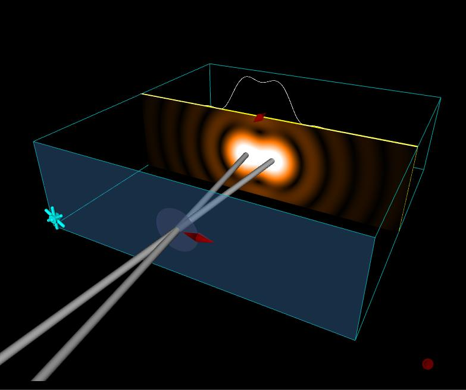

Image 3
λ = 550 nm, D = 3.335 cm, f = 50 mm, Angle = 2.00 x 10-5 radians, Min Angle = 2.00 x 10-5 radians.
To download the high resolution image, copy the following link into your
Definitions
λ = wavelength in vacuum
D = diamater of lens
f = focal length of lens
Angle = angular seperation of the sources
Min Angle = minimum angular seperation that can be resolved by the lens
Image 1
λ = 550 nm, D = 3.35 cm, f = 50 mm, Angle = 4.00 x 10-5 radians,
Min Angle = 2.00 x 10-5 radians.
To download the high resolution image, copy the following link into your
Image 2
λ = 550 nm, D = 3.335 cm, f = 50 mm, Angle = 3.00 x 10-5 radians,
Min Angle = 2.00 x 10-5 radians.
To download the high resolution image, copy the following link into your
Image 3
λ = 550 nm, D = 3.335 cm, f = 50 mm, Angle = 2.00 x 10-5 radians,
Min Angle = 2.00 x 10-5 radians.
To download the high resolution image, copy the following link into your
Image 4
λ = 550 nm, D = 3.335 cm, f = 50 mm, Angle = 1.00 x 10-5 radians,
Min Angle = 2.00 x 10-5 radians.
To download the high resolution image, copy the following link into your
Image 5
λ = 400 nm, D = 3.335 cm, f = 50 mm, Angle = 2.00 x 10-5 radians,
Min Angle = 1.45 x 10-5 radians.
To download the high resolution image, copy the following link into your
Image 6
λ = 500 nm, D = 3.335 cm, f = 50 mm, Angle = 2.00 x 10-5 radians,
Min Angle = 1.82 x 10-5 radians.
To download the high resolution image, copy the following link into your

Image 7
λ = 600 nm, D = 3.335 cm, f = 50 mm, Angle = 2.00 x 10-5 radians,
Min Angle = 2.18 x 10-5 radians.
To download the high resolution image, copy the following link into your
Image 8
λ = 700 nm, D = 3.335 cm, f = 50 mm, Angle = 2.00 x 10-5 radians,
Min Angle = 2.55 x 10-5 radians.
To download the high resolution image, copy the following link into your
Image 9
λ = 550 nm, D = 2.50 cm, f = 50 mm, Angle = 2.00 x 10-5 radians,
Min Angle = 2.68 x 10-5 radians.
To download the high resolution image, copy the following link into your
Image 10
λ = 550 nm, D = 3.50 cm, f = 50 mm, Angle = 2.00 x 10-5 radians,
Min Angle = 1.92 x 10-5 radians.
To download the high resolution image, copy the following link into your
Image 11
λ = 550 nm, D = 3.50 cm, f = 50 mm, Angle = 2.00 x 10-5 radians,
Min Angle = 1.92 x 10-5 radians.
To download the high resolution image, copy the following link into your

Image 12
λ = 550 nm, D = 4.00 cm, f = 50 mm, Angle = 2.00 x 10-5 radians,
Min Angle = 1.68 x 10-5 radians.
To download the high resolution image, copy the following link into your